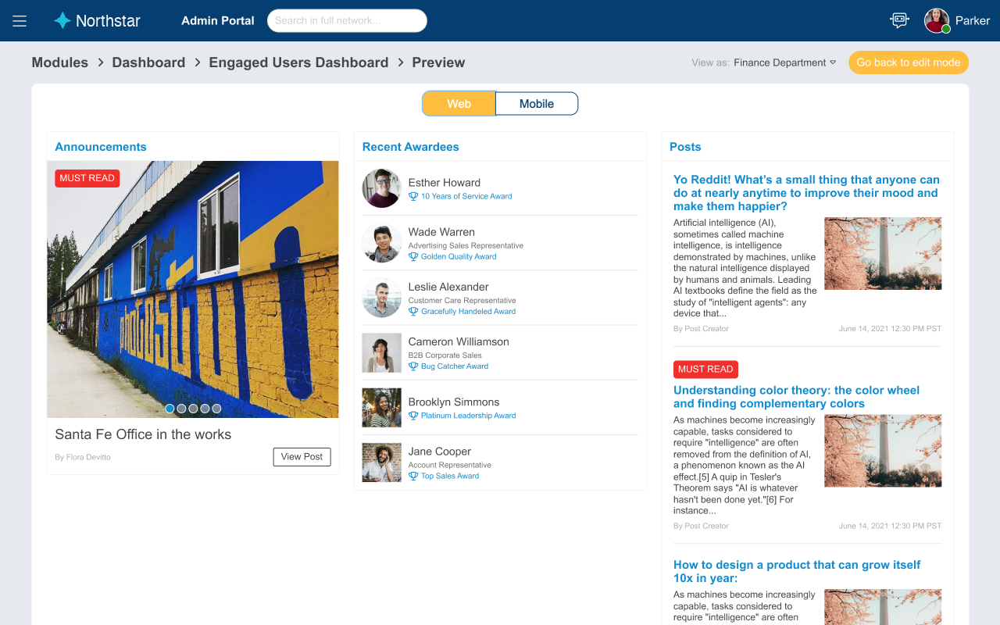
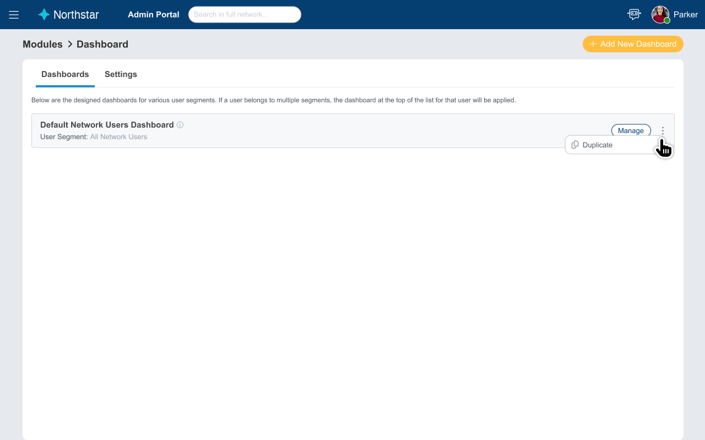
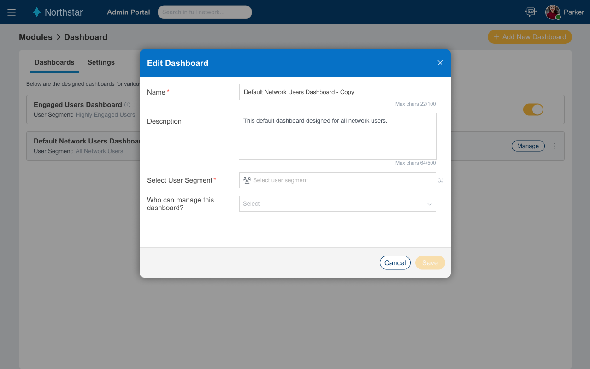
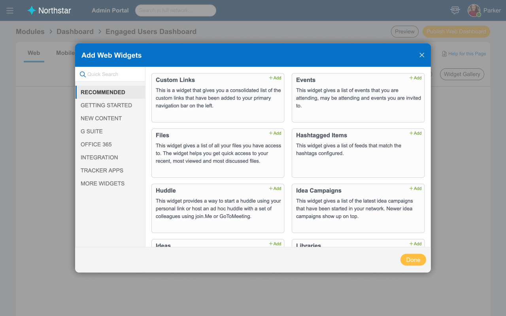
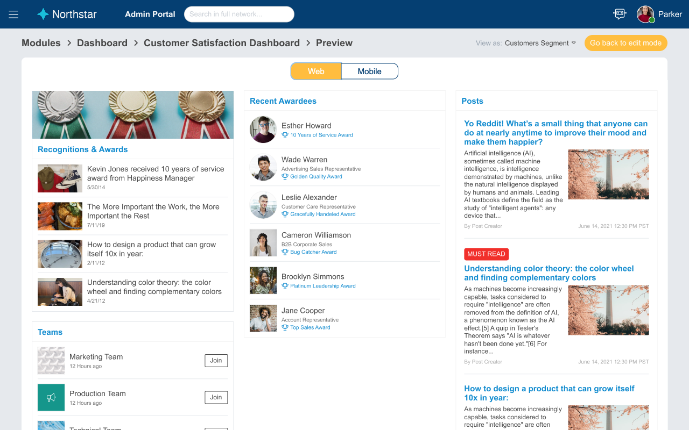

User Segment Based Dashboards
I designed the rules for assigning a homepage when an employee belongs to several groups.
- Role
- Senior UI/UX Designer
- Platform
- Web + mobile · Enterprise intranet
- Year
- 2024
The challenge
Employees with different roles shared the same homepage, and admins could not preview an audience’s experience before publishing.
Outcome
Admins can create a dashboard for each audience, preview it, and publish web and mobile layouts independently.

The Approach
Design for different audiences
A single homepage could not serve office and frontline staff equally well. I made the dashboard itself assignable to an employee group, rather than relying only on hidden widgets.
Make ownership clear
Admins can choose who manages each dashboard, so responsibility can be delegated without giving everyone control over every layout.
Make changes safely
Previewing a dashboard as an audience and publishing each platform separately gives admins a chance to check the experience before release.
The Key Decision
Some employees belong to more than one audience, so several dashboards might apply to the same person.
I used an ordered list: the first matching dashboard is shown, with a default dashboard as a fallback.
The order is visible in the admin list, so the assignment can be explained and adjusted without relying on a hidden rule.

The Solution
Create for an audience
Assign each dashboard to a user segment and choose who can manage it.
Build and preview
Arrange widgets and preview the experience for that audience.
Publish with control
Release web and mobile layouts separately and choose whether to replace user customisations.


